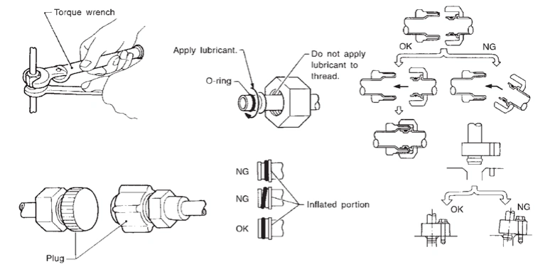

通風、暖氣 & 空調 - 暖氣 & 空調系統 - 預防措施 - 預防措施/注意事項
冷媒系統維修預防措施/注意事項
N5090203R0000S00ENG
冷媒一般預防措施
警告：
切勿吸入 A/C 冷媒及潤滑油蒸氣或霧氣。接觸可能刺激眼睛、鼻子及喉嚨。請使用符合 SAE J-2843 [HFO-1234yf (R-1234yf) Recovery/Recycling/Recharging Equipment for Flammable Refrigerants for Mobile Air Conditioning Systems] 規定之認證服務設備，從 A/C 系統中回收 HFO-1234yf (R-1234yf)。若發生意外排放，請在恢復作業前對工作區域進行通風。更多健康與安全資訊可向冷媒及潤滑油製造商索取。
切勿將冷媒排放至大氣中。每次排空空調系統時，請使用核准的回收/再生/充填設備回收冷媒。
處理任何冷媒或空調系統時，請務必佩戴眼睛及手部防護裝備（護目鏡及手套）。
切勿將冷媒容器存放或加熱至 40°C (104°F) 以上。
切勿以明火加熱冷媒容器；若需加溫容器，請將容器底部置於溫水桶中。
切勿故意掉落、刺穿或焚燒冷媒容器。
冷媒請遠離明火：冷媒燃燒時會產生有毒氣體。
冷媒會取代氧氣，因此務必在通風良好的區域作業，以避免窒息。
維修期間請勿使用壓縮空氣對 HFO-1234yf (R-1234yf) 服務設備及/或車輛空調系統進行加壓測試或洩漏測試。空氣與 HFO-1234yf (R-1234yf) 的某些混合物在高壓下可能可燃。若點燃，可能導致人員傷害或財產損壞。更多健康與安全資訊可向冷媒製造商索取。
使用 HFO-1234yf (R-1234YF)
注意：
CFC-12 (R-12) 或 HFC-134a (R-134a) 冷媒與 HFO-1234yf (R-1234yf) 冷媒不相容。若混合冷媒，壓縮機可能發生故障，請參閱下方「受污染冷媒」。若要確認車輛及回收槽中 HFO-1234yf (R-1234yf) 的純度，請使用冷媒回收/再生/充填設備及冷媒識別儀。
HFO-1234yf (R-1234yf) A/C 系統及 HFO-1234yf (R-1234yf) 組件僅可使用指定潤滑油。若使用指定以外之潤滑油，壓縮機可能發生故障。
指定之 HFO-1234yf (R-1234yf) 潤滑油會迅速吸收大氣中的水分。必須遵守下列處理預防措施/注意事項：
從車輛拆卸冷媒組件時，請立即封蓋（密封）組件，以盡量減少大氣中水分進入。
將冷媒組件安裝至車輛時，在連接組件之前切勿拆下封蓋（解封）。請盡快連接所有冷媒迴路組件，以盡量減少水分進入系統。
僅可使用密封容器內之指定潤滑油。潤滑油容器使用後請立即重新密封。潤滑油若未妥善密封，會吸收水分飽和，不應再使用。
切勿讓潤滑油接觸苯乙烯泡沫零件。否則可能造成損壞。
受污染冷媒
若於車輛中發現純 HFO-1234yf (R-1234yf) 以外之冷媒，請採取下列適當措施：
向客戶說明，依環保法規禁止將受污染冷媒排放至大氣中。
說明回收受污染冷媒可能損壞服務設備及冷媒供應。
建議客戶將車輛送回先前維修地點，該處可能發生污染。
若進行修理，僅可使用
專用設備及容器回收冷媒。切勿將受污染冷媒回收至現有服務設備中。
若本廠無專用回收設備，請聯絡當地冷媒產品經銷商取得可用服務。此冷媒必須依所有聯邦及地方法規處置。此外，建議更換車輛上所有冷媒系統組件。
若車輛在保固期內，空調保固將失效。如需進一步協助，請聯絡 Nissan Customer Affairs。
冷媒連接
警告：
確認所有冷媒已排放至回收設備，且系統壓力低於大氣壓力。然後逐漸鬆開排放側軟管接頭並拆下。
注意：
更換或清潔冷媒循環組件時，請遵守下列事項。
拆卸壓縮機時，應以安裝於車上時相同的方式存放。若未如此做，潤滑油會進入低壓室。
連接管路時，請務必使用扭力扳手及固定扳手。
斷開管路後，請立即封堵所有開口，以防止灰塵和水分進入。
於車輛安裝空調之最後階段連接管路。在需要連接之前，切勿拆下管路及其他組件的密封蓋。
存放於低溫區域的組件，在拆下密封蓋前應先回溫至工作區域溫度。這可防止 A/C 組件內部產生冷凝。
充填冷媒前，請徹底清除冷凍系統中的水分。
務必更換使用過的 O形環。
連接管路時，請在圖示所示 O形環圓周塗抹潤滑油。注意勿塗抹於螺紋部位。
O形環必須緊密貼合於管路凹槽部位。
更換 O形環時，請注意不要損壞 O形環及管路。
連接管路直至聽到喀嗒聲。然後以手鎖緊螺帽或螺栓。確認 O形環已正確安裝於管路上。
連接管路後進行洩漏測試，並務必確認連接處無洩漏。若發現冷媒洩漏點，請斷開該管路並更換 O形環。然後將密封座連接處鎖緊至指定扭力。

CF100ASWAA00ENG
A/C 壓縮機
注意：
封堵所有開口，以防止水分及異物進入。
拆卸 A/C 壓縮機時，應以安裝於車上時相同的方式存放。
更換或修理 A/C 壓縮機時，請嚴格遵守「壓縮機內潤滑油量維護」。請參閱
說明
.
保持離合器與皮帶盤之間的摩擦面清潔。若表面沾有潤滑油，請使用沾有稀釋劑的乾淨廢布擦拭乾淨。
A/C 壓縮機維修作業後，請以手將壓縮機軸正反向各轉動五圈以上。這可使潤滑油均勻分布於 A/C 壓縮機內部。A/C 壓縮機安裝後，請讓引擎怠速運轉並操作 A/C 壓縮機一小時。
更換 A/C 壓縮機電磁離合器後，請對新品施加電壓並檢查是否正常作動。
已加入書籤
書籤數量過多。
請刪除後重新加入書籤。
×
){kind=link}